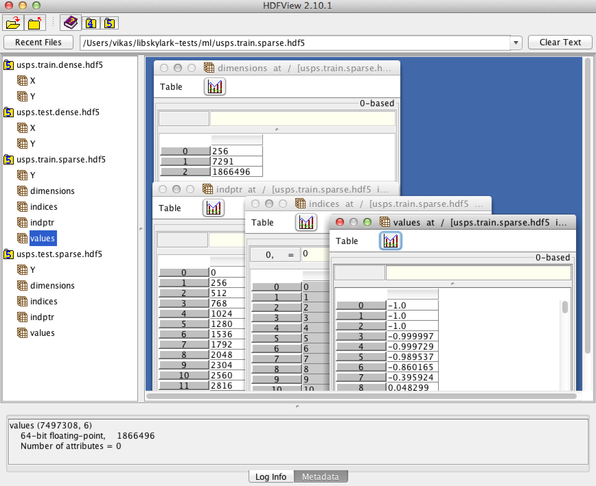

Machine Learning¶
Randomized Kernel Methods¶
libSkylark provides distributed implementations of kernel-based nonlinear models for
- Regularized Least Squares Regression and Classification
- Regularized Robust Regression (Least Absolute Deviation loss)
- Support Vector Machines
- Multinomial Logistic Regression (classes > 2).
The following kernels are supported:
- Gaussian and Laplacian Kernels via Random Fourier Transform (Rahimi and Recht, 2007)
- Gaussian and Laplacian Kernels via Fast Random Fourier Transform (Le, Sarlos and Smola, 2013)
- Polynomial Kernels via Tensor Sketch (Pahm and Pagh, 2013)
- Exponential Semigroup Kernels via Random Laplace Transform (Yang et al, 2014)
- The implementations combine two ideas:
- Constructing randomized approximations to Kernel functions on the fly
- Using a distributed optimization solver based on Alternating Directions Method of Multipliers (ADMM)
The distributed optimization approach is based on a block-splitting variant of ADMM proposed in Parikh and Boyd, 2014
- The full implementation (under libskylark/ml) is described in the following paper:
- Sindhwani V. and Avron H., High-performance Kernel Machines with Implicit Distributed Optimization and Randomization, 2014
Standalone Usage¶
Building libSkylark creates an executable called skylark_ml under CMAKE_PREFIX_INSTALL/bin. This executable can be used out-of-the-box for large-scale applications involving kernel-based modeling.
Input Data Format¶
The implementation supports LIBSVM file format, where feature vectors and labels are specified as
0 1:0.2 4:0.5 10:0.3
5 3:0.3 6:0.1
Each line begins with a label and followed by index (starting with 1)-value pairs describing the feature vector in sparse format.
We also support HDF5 data files.
- Dense training data can be described using HDF5 files containing two HDF5 datasets:
- X – n x d matrix (examples-by-features)
- Y – n x 1 matrix of labels.
- Sparse training data can be described using HDF5 files containing five HDF5 datasets specifying a Compressed Row Storage Sparse matrix:
- dimensions: 3 x 1 matrix [number of features, number of examples, number of nonzeros (nnz)]
- indices: nnz x 1 matrix column indices of non-zero values for CRS datastructure representing the examples-by-features sparse matrix
- values: nnz x 1 non-zero values corresponding to indices
- indptr: (n+1) x 1 - pointer into indices, values specifying rows
- Y: n x 1 matrix of labels
Examples of such files can be downloaded from here. The HDF5 files can be viewed using HDFView. A screenshot is shown below.
{kind=link}
Note
For all fileformats described above, the current implementation is geared towards classification problems and requires the label to assume values from 0 to (K-1) for a K-class problem, or +1/-1 for binary classification problems. This assumption will be relaxed.
Example and Commandline Usage¶
Please see ML
Training mode usage: skylark_ml [options] --trainfile trainfile --modelfile modelfile
Testing mode usage: skylark_ml --modelfile modelfile --testfile testfile
-h [ --help ] produce a help message
-l [ --lossfunction ] arg (=0) Loss function (0:SQUARED (L2), 1:LAD
(L1), 2:HINGE, 3:LOGISTIC)
-r [ --regularizer ] arg (=0) Regularizer (0:L2, 1:L1)
-k [ --kernel ] arg (=0) Kernel (1:GAUSSIAN,
2:POLYNOMIAL, 3:LAPLACIAN,
4:EXPSEMIGROUP)
-g [ --kernelparam ] arg (=1) Kernel Parameter
-x [ --kernelparam2 ] arg (=0) If Applicable - Second Kernel Parameter
(Polynomial Kernel: c)
-y [ --kernelparam3 ] arg (=1) If Applicable - Third Kernel Parameter
(Polynomial Kernel: gamma)
-c [ --lambda ] arg (=0) Regularization Parameter
-e [ --tolerance ] arg (=0.001) Tolerance
--rho arg (=1) ADMM rho parameter
-s [ --seed ] arg (=12345) Seed for Random Number Generator
-f [ --randomfeatures ] arg (=100) Number of Random Features (default:
100)
-n [ --numfeaturepartitions ] arg (=1)
Number of Feature Partitions (default:
1)
-t [ --numthreads ] arg (=1) Number of Threads (default: 1)
--regular arg (=1) Default is to use 'fast' feature
mapping, if available.Use this flag to
force regular mapping (default: false)
--cachetransforms arg (=0) Default is to not cache feature
transforms per iteration, but generate
on fly. Use this flag to force
transform caching if you have enough
memory (default: false)
--fileformat arg (=0) Fileformat (default: 0 (libsvm->dense),
1 (libsvm->sparse), 2 (hdf5->dense), 3
(hdf5->sparse)
-i [ --MAXITER ] arg (=100) Maximum Number of Iterations (default:
100)
--trainfile arg Training data file (required in
training mode)
--modelfile arg Model output file
--valfile arg Validation file (optional)
--testfile arg Test file (optional in training mode;
required in testing mode)
Library Usage¶
To be documented (please see ml/run.hpp for a driver program).